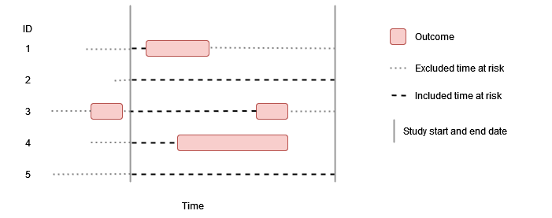

Calculating incidence
a05_Calculating_incidence.RmdIntroduction
Incidence rates describe the rate at which new events occur in a population, with the denominator the person-time at risk of the event during this period. In the previous vignettes we have seen how we can identify a set of denominator and outcome cohorts. Incidence rates can then be calculated using time contributed from these denominator cohorts up to their entry into an outcome cohort.
There are a number of options to consider when calculating incidence rates. This package accommodates two main parameters, including:
- Outcome washout: The number of days used for a ‘washout’ period between the end of one outcome ending and an individual starting to contribute time at risk again.
- Repeated events: Whether individuals are able to contribute multiple events during the study period or if they will only contribute time up to their first event during the study period.
No washout, no repetitive events
In this example there is no outcome washout specified and repetitive events are not allowed, so individuals contribute time up to their first event during the study period. 
Washout all history, no repetitive events
In this example the outcome washout is all history and repetitive events are not allowed. As before individuals contribute time up to their first event during the study period, but having an outcome prior to the study period (such as person “3”) means that no time at risk is contributed.

Some washout, no repetitive events
In this example there is some amount of outcome washout and repetitive events are not allowed. As before individuals contribute time up to their first event during the study period, but having an outcome prior to the study period (such as person “3”) means that time at risk is only contributed once sufficient time has passed for the outcome washout criteria to have been satisfied.


Outcome definition
General information on how to define outcome cohorts can be found in the vignette “Creating outcome cohorts”. The most important recommendations for defining an outcome cohort for calculating incidence are:
- Do not restrict outcome cohorts to first events only. This will impact the ability to exclude participants (as they can be excluded based on the prior latest event) and to capture more than one event per person (which is an option allowed in the package).
- Set an appropriate cohort exit strategy. If you want to be able to capture more than one event per person, it is important to set the event persistence to a fixed duration relative to the event and not to the end of observation.
- Do not add further restrictions on sex, age and prior history
requirements. These can be specified when identifying the denominator
population with the
generateDenominatorCohortSet()function.
Considering all the above, we only recommend restricting outcome definitions to first events if the user is not interested in further occurrences and if all prior history is considered to exclude participants who have already experienced the event.
Using estimateIncidence()
estimateIncidence() is the function we use to estimate
incidence rates. To demonstrate its use, let´s load the
IncidencePrevalence package (along with a couple of packages to help for
subsequent plots) and generate 50,000 example patients using the
mockIncidencePrevalenceRef() function, from whom we´ll
create a denominator population without adding any restrictions other
than a study period.
library(IncidencePrevalence)
library(dplyr)
library(tidyr)
library(ggplot2)
cdm <- mockIncidencePrevalenceRef(
sampleSize = 50000,
outPre = 0.5
)
cdm$denominator <- generateDenominatorCohortSet(
cdm = cdm,
startDate = as.Date("2008-01-01"),
endDate = as.Date("2012-01-01"),
ageGroup = list(c(0, 150)),
sex = "Both",
daysPriorHistory = 0
)
cdm$denominator %>%
glimpse()
#> Rows: ??
#> Columns: 4
#> Database: DuckDB 0.6.2-dev1166 [unknown@Linux 5.15.0-1031-azure:R 4.2.2/:memory:]
#> $ cohort_definition_id <int> 1, 1, 1, 1, 1, 1, 1, 1, 1, 1, 1, 1, 1, 1, 1, 1, 1…
#> $ subject_id <chr> "2", "4", "6", "8", "12", "13", "21", "22", "24",…
#> $ cohort_start_date <date> 2008-01-01, 2011-04-26, 2011-10-13, 2008-01-01, …
#> $ cohort_end_date <date> 2008-08-03, 2011-07-16, 2012-01-01, 2008-04-12, …Let´s first calculate incidence rates on a yearly basis, without allowing repetitive events
inc <- estimateIncidence(
cdm = cdm,
denominatorTable = "denominator",
outcomeTable = "outcome",
interval = "years",
outcomeWashout = 0,
repeatedEvents = FALSE
)
inc %>%
glimpse()
#> Rows: 4
#> Columns: 12
#> $ analysis_id <chr> "1", "1", "1", "1"
#> $ n_persons <int> 7926, 7055, 6862, 6872
#> $ person_days <dbl> 1465281, 1285865, 1278246, 1289876
#> $ n_events <int> 1672, 1708, 1682, 1708
#> $ incidence_start_date <date> 2008-01-01, 2009-01-01, 2010-01-01, 20…
#> $ incidence_end_date <date> 2008-12-31, 2009-12-31, 2010-12-31, 20…
#> $ person_years <dbl> 4011.721, 3520.507, 3499.647, 3531.488
#> $ incidence_100000_pys <dbl> 41677.88, 48515.75, 48061.99, 48364.88
#> $ incidence_100000_pys_95CI_lower <dbl> 39703.87, 46241.92, 45792.30, 46098.13
#> $ incidence_100000_pys_95CI_upper <dbl> 43724.63, 50872.45, 50415.07, 50714.26
#> $ cohort_obscured <chr> "FALSE", "FALSE", "FALSE", "FALSE"
#> $ result_obscured <chr> "FALSE", "FALSE", "FALSE", "FALSE"
inc %>%
ggplot(aes(x = incidence_start_date, y = incidence_100000_pys,
ymin = incidence_100000_pys_95CI_lower,
ymax = incidence_100000_pys_95CI_upper)) +
geom_point() +
geom_errorbar(width = 0) +
scale_y_continuous(limits = c(0, NA)) +
theme_minimal()
Now with a washout of all prior history while still not allowing repetitive events
inc <- estimateIncidence(
cdm = cdm,
denominatorTable = "denominator",
outcomeTable = "outcome",
interval = "years",
outcomeWashout = NULL,
repeatedEvents = FALSE
)
inc %>%
glimpse()
#> Rows: 4
#> Columns: 12
#> $ analysis_id <chr> "1", "1", "1", "1"
#> $ n_persons <int> 6832, 6822, 6850, 6872
#> $ person_days <dbl> 1261517, 1252799, 1277510, 1289876
#> $ n_events <int> 1672, 1708, 1682, 1708
#> $ incidence_start_date <date> 2008-01-01, 2009-01-01, 2010-01-01, 20…
#> $ incidence_end_date <date> 2008-12-31, 2009-12-31, 2010-12-31, 20…
#> $ person_years <dbl> 3453.845, 3429.977, 3497.632, 3531.488
#> $ incidence_100000_pys <dbl> 48409.81, 49796.26, 48089.68, 48364.88
#> $ incidence_100000_pys_95CI_lower <dbl> 46116.95, 47462.42, 45818.69, 46098.13
#> $ incidence_100000_pys_95CI_upper <dbl> 50787.16, 52215.16, 50444.11, 50714.26
#> $ cohort_obscured <chr> "FALSE", "FALSE", "FALSE", "FALSE"
#> $ result_obscured <chr> "FALSE", "FALSE", "FALSE", "FALSE"
inc %>%
ggplot(aes(x = incidence_start_date, y = incidence_100000_pys,
ymin = incidence_100000_pys_95CI_lower,
ymax = incidence_100000_pys_95CI_upper)) +
geom_point() +
geom_errorbar(width = 0) +
scale_y_continuous(limits = c(0, NA)) +
theme_minimal()
Now we´ll set the washout to 180 days while still not allowing repetitive events
inc <- estimateIncidence(
cdm = cdm,
denominatorTable = "denominator",
outcomeTable = "outcome",
interval = "years",
outcomeWashout = 180,
repeatedEvents = FALSE
)
inc %>%
glimpse()
#> Rows: 4
#> Columns: 12
#> $ analysis_id <chr> "1", "1", "1", "1"
#> $ n_persons <int> 7738, 7055, 6862, 6872
#> $ person_days <dbl> 1418998, 1285865, 1278246, 1289876
#> $ n_events <int> 1672, 1708, 1682, 1708
#> $ incidence_start_date <date> 2008-01-01, 2009-01-01, 2010-01-01, 20…
#> $ incidence_end_date <date> 2008-12-31, 2009-12-31, 2010-12-31, 20…
#> $ person_years <dbl> 3885.005, 3520.507, 3499.647, 3531.488
#> $ incidence_100000_pys <dbl> 43037.27, 48515.75, 48061.99, 48364.88
#> $ incidence_100000_pys_95CI_lower <dbl> 40998.87, 46241.92, 45792.30, 46098.13
#> $ incidence_100000_pys_95CI_upper <dbl> 45150.78, 50872.45, 50415.07, 50714.26
#> $ cohort_obscured <chr> "FALSE", "FALSE", "FALSE", "FALSE"
#> $ result_obscured <chr> "FALSE", "FALSE", "FALSE", "FALSE"
inc %>%
ggplot(aes(x = incidence_start_date, y = incidence_100000_pys,
ymin = incidence_100000_pys_95CI_lower,
ymax = incidence_100000_pys_95CI_upper)) +
geom_point() +
geom_errorbar(width = 0) +
scale_y_continuous(limits = c(0, NA)) +
theme_minimal()
And finally we´ll set the washout to 180 days and allow repetitive events
inc <- estimateIncidence(
cdm = cdm,
denominatorTable = "denominator",
outcomeTable = "outcome",
interval = "years",
outcomeWashout = 180,
repeatedEvents = TRUE
)
inc %>%
glimpse()
#> Rows: 4
#> Columns: 12
#> $ analysis_id <chr> "1", "1", "1", "1"
#> $ n_persons <int> 7738, 7790, 7875, 7850
#> $ person_days <dbl> 1448414, 1454027, 1487577, 1499038
#> $ n_events <int> 1672, 1708, 1682, 1708
#> $ incidence_start_date <date> 2008-01-01, 2009-01-01, 2010-01-01, 20…
#> $ incidence_end_date <date> 2008-12-31, 2009-12-31, 2010-12-31, 20…
#> $ person_years <dbl> 3965.541, 3980.909, 4072.764, 4104.142
#> $ incidence_100000_pys <dbl> 42163.22, 42904.77, 41298.74, 41616.49
#> $ incidence_100000_pys_95CI_lower <dbl> 40166.22, 40893.93, 39348.44, 39666.02
#> $ incidence_100000_pys_95CI_upper <dbl> 44233.81, 44988.92, 43320.69, 43638.06
#> $ cohort_obscured <chr> "FALSE", "FALSE", "FALSE", "FALSE"
#> $ result_obscured <chr> "FALSE", "FALSE", "FALSE", "FALSE"
inc %>%
ggplot(aes(x = incidence_start_date, y = incidence_100000_pys,
ymin = incidence_100000_pys_95CI_lower,
ymax = incidence_100000_pys_95CI_upper)) +
geom_point() +
geom_errorbar(width = 0) +
scale_y_continuous(limits = c(0, NA)) +
theme_minimal()
Other parameters
In the examples above, we have used calculated incidence rates by months and years, but it can be also calculated by weeks, months, quarters, or for the entire study time period. In addition, we can decide whether to include time intervals that are not fully captured in the database (e.g., having data up to June for the last study year when computing yearly incidence rates). By default, incidence will only be estimated for those intervals where the database captures all the interval (completeDatabaseIntervals=TRUE).
Given that we can set estimateIncidence() to exclude
individuals based on other parameters (e.g., outcomeWashout), it is
important to note that the denominator population used to compute
incidence rates might differ from the one calculated with
generateDenominatorCohortSet().
The user can also set the minimum number of events to be reported, below which results will be obscured. By default, results with <5 occurrences are blinded, but if minCellCount=0, all results will be reported. 95 % confidence intervals are calculated using the exact method. We can set verbose=TRUE to report progress as code is running. By default, no progress is reported (verbose=FALSE).
inc <- estimateIncidence(
cdm = cdm,
denominatorTable = "denominator",
outcomeTable = "outcome",
interval = c("weeks"),
completeDatabaseIntervals = FALSE,
outcomeWashout = 180,
repeatedEvents = TRUE,
minCellCount = 0,
verbose = TRUE
)
#> Getting incidence for analysis 1 of 1
#> Overall time taken: 0 mins and 7 secsOutput
estimateIncidence() will generate a table with incidence
rates for each of the time intervals studied and for each combination of
the parameters set. Similar to the output obtained by
generateDenominatorCohortSet(), the table generated will
also be associated with attributes such as settings and attrition.
inc <- estimateIncidence(
cdm = cdm,
denominatorTable = "denominator",
outcomeTable = "outcome",
interval = c("Years"),
outcomeWashout = c(0, 180),
repeatedEvents = TRUE,
returnParticipants = TRUE
)
attrition(inc)
#> # A tibble: 22 × 5
#> current_n reason exclu…¹ step analy…²
#> <dbl> <glue> <dbl> <chr> <chr>
#> 1 50000 Starting population NA Gene… 1
#> 2 50000 Missing year of birth 0 Gene… 1
#> 3 50000 Missing sex 0 Gene… 1
#> 4 50000 Cannot satisfy age criteria during the study… 0 Gene… 1
#> 5 18018 No observation time available during study p… 31982 Gene… 1
#> 6 18018 Doesn't satisfy age criteria during the stud… 0 Gene… 1
#> 7 18018 Prior history requirement not fulfilled duri… 0 Gene… 1
#> 8 18018 No observation time available after applying… 0 Gene… 1
#> 9 18018 Starting analysis population NA Esti… 1
#> 10 18018 Excluded due to prior event (do not pass out… 0 Esti… 1
#> # … with 12 more rows, and abbreviated variable names ¹excluded, ²analysis_id
settings(inc)
#> # A tibble: 2 × 16
#> analysis_id outcome_…¹ outco…² analy…³ analy…⁴ analy…⁵ analy…⁶ denom…⁷ analy…⁸
#> <chr> <chr> <lgl> <dbl> <lgl> <chr> <lgl> <int> <dbl>
#> 1 1 1 NA 0 TRUE years TRUE 1 5
#> 2 2 1 NA 180 TRUE years TRUE 1 5
#> # … with 7 more variables: denominator_age_group <chr>, denominator_sex <chr>,
#> # denominator_days_prior_history <dbl>, denominator_start_date <date>,
#> # denominator_end_date <date>, denominator_strata_cohort_definition_id <lgl>,
#> # denominator_strata_cohort_name <lgl>, and abbreviated variable names
#> # ¹outcome_cohort_id, ²outcome_cohort_name, ³analysis_outcome_washout,
#> # ⁴analysis_repeated_events, ⁵analysis_interval,
#> # ⁶analysis_complete_database_intervals, ⁷denominator_cohort_id, …In addition, if we set returnParticipants as TRUE as above, we can
see the individuals who contributed to a given analysis by using
participants(). This can be used if we want to perform
further analyses on the individuals (e.g. describing their
characteristics).
participants(inc)
#> $study_population_analyis_1
#> # Source: SQL [?? x 6]
#> # Database: DuckDB 0.6.2-dev1166 [unknown@Linux 5.15.0-1031-azure:R 4.2.2/:memory:]
#> analysis_id subject_id cohort_start_date cohort_end_d…¹ outcome_…² outcome_…³
#> <chr> <chr> <date> <date> <date> <date>
#> 1 1 6 2011-10-13 2012-01-01 NA NA
#> 2 1 12 2008-01-01 2009-03-08 NA NA
#> 3 1 13 2008-01-01 2009-12-29 NA NA
#> 4 1 21 2011-06-06 2012-01-01 NA NA
#> 5 1 22 2009-10-22 2012-01-01 NA NA
#> 6 1 29 2010-10-14 2012-01-01 NA NA
#> 7 1 40 2008-05-31 2009-05-08 NA NA
#> 8 1 42 2011-12-12 2012-01-01 NA NA
#> 9 1 57 2011-02-09 2012-01-01 NA NA
#> 10 1 61 2009-07-04 2009-08-05 NA NA
#> # … with more rows, and abbreviated variable names ¹cohort_end_date,
#> # ²outcome_start_date, ³outcome_prev_end_date
#>
#> $study_population_analyis_2
#> # Source: SQL [?? x 6]
#> # Database: DuckDB 0.6.2-dev1166 [unknown@Linux 5.15.0-1031-azure:R 4.2.2/:memory:]
#> analysis_id subject_id cohort_start_date cohort_end_d…¹ outcome_…² outcome_…³
#> <chr> <chr> <date> <date> <date> <date>
#> 1 2 6 2011-10-13 2012-01-01 NA NA
#> 2 2 12 2008-01-01 2009-03-08 NA NA
#> 3 2 13 2008-01-01 2009-12-29 NA NA
#> 4 2 21 2011-06-06 2012-01-01 NA NA
#> 5 2 22 2009-10-22 2012-01-01 NA NA
#> 6 2 29 2010-10-14 2012-01-01 NA NA
#> 7 2 40 2008-05-31 2009-05-08 NA NA
#> 8 2 42 2011-12-12 2012-01-01 NA NA
#> 9 2 57 2011-02-09 2012-01-01 NA NA
#> 10 2 61 2009-07-04 2009-08-05 NA NA
#> # … with more rows, and abbreviated variable names ¹cohort_end_date,
#> # ²outcome_start_date, ³outcome_prev_end_dateWe can find the median year of cohort entry of those people contributing to analysis 1 for example by
participants(inc, analysisId = 1) %>%
summarise(median_start = median(year(cohort_start_date)))
#> # Source: SQL [1 x 1]
#> # Database: DuckDB 0.6.2-dev1166 [unknown@Linux 5.15.0-1031-azure:R 4.2.2/:memory:]
#> median_start
#> <dbl>
#> 1 2009